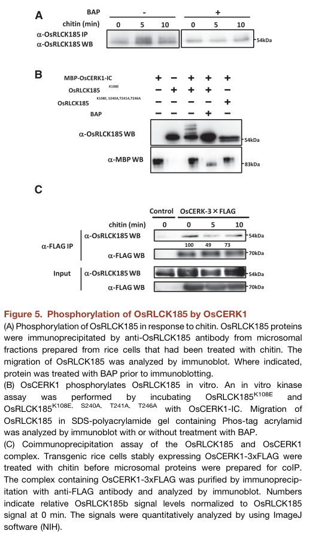
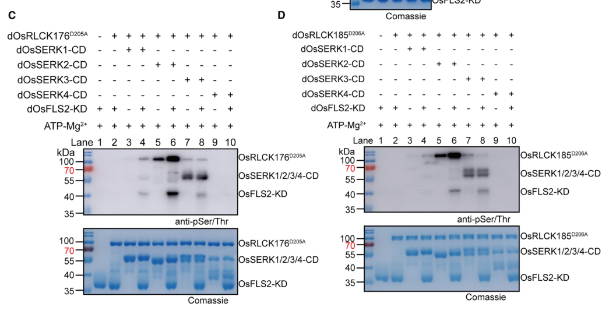

OsRLCK185 (Os05g0372100) is a receptor-like cytoplasmic kinase of subfamily VII in rice and the counterpart of Arabidopsis PBL27. It is a catalytically active serine/threonine protein kinase that lacks transmembrane and extracellular domains and associates with the inner face of the plasma membrane, where it interacts with the LysM receptor kinase OsCERK1 of the OsCEBiP-OsCERK1 chitin receptor complex (and the peptidoglycan receptor system that shares OsCERK1). After chitin perception OsCERK1 directly phosphorylates OsRLCK185 in its activation-loop region, and OsRLCK185 dissociates from the receptor and phosphorylates downstream substrates. It phosphorylates the C-terminal regulatory domain of the MAP kinase kinase kinase OsMAPKKKepsilon (OsMAPKKK24) and also phosphorylates OsMAPKKK18, connecting the receptor to the OsMKK4-OsMPK3/OsMPK6 cascade; silencing OsRLCK185 suppresses chitin- and peptidoglycan-induced MAPK activation, ROS production and defence gene expression. It is targeted by the Xanthomonas oryzae type III effector Xoo1488, which blocks its phosphorylation by OsCERK1, and it is also phosphorylated by the OsFLS2-OsSERK2 flagellin receptor complex and contributes to flg22-induced defence gene expression. Additional reported partners include OsDRE2a, which it phosphorylates, and the receptor-like kinases OsRLK902-1/2, which stabilise it.
| GO Term | Evidence | Action | Reason |
|---|---|---|---|
|
GO:0002768
immune response-regulating cell surface receptor signaling pathway
|
EXP
PMID:23498959 A receptor-like cytoplasmic kinase targeted by a plant patho... |
MODIFY |
Summary: PHI-base annotation from Yamaguchi et al. 2013: OsRLCK185 associates with and is directly phosphorylated by the chitin receptor kinase OsCERK1, and silencing it suppresses chitin- and peptidoglycan-induced immune responses including MAPK activation.
Reason: Correct but less specific than warranted. Chitin and peptidoglycan are PAMPs perceived by cell surface pattern recognition receptors, and OsRLCK185 is the kinase that receives the signal directly from OsCERK1 (and also from the OsFLS2-OsSERK2 flagellin receptor). The is_a descendant cell surface pattern recognition receptor signaling pathway (GO:0002752) is more informative and matches the treatment of the same row on OsCERK1, of PBL27, and of the chitin_perception module.
Proposed replacements:
cell surface pattern recognition receptor signaling pathway
Supporting Evidence:
PMID:23498959
In response to chitin, OsRLCK185 associates with, and is directly phosphorylated by, OsCERK1 at the plasma membrane.
PMID:23498959
Silencing OsRLCK185 suppressed peptidoglycan- and chitin-induced immune responses, including MAP kinase activation and defense-gene expression.
PMID:38158656
Genetic evidence suggests that OsRLCK176 and OsRLCK185 may function downstream of the OsFLS2-mediated signaling pathway.
|
|
GO:0004672
protein kinase activity
|
EXP
PMID:23498959 A receptor-like cytoplasmic kinase targeted by a plant patho... |
ACCEPT |
Summary: PHI-base kinase activity annotation from the OsRLCK185 discovery paper. The cached abstract describes OsRLCK185 as a substrate of OsCERK1; the deep-research summary of the full text reports that OsRLCK185 autophosphorylates and phosphorylates the effector Xoo1488 in vitro, with the K108E kinase-dead variant as control.
Reason: OsRLCK185 is an active kinase. Independent work shows that it phosphorylates OsMAPKKKepsilon, OsMAPKKK18 and OsDRE2a. The full text of PMID:23498959 is not cached; the curator's annotation is consistent with all other evidence and is accepted. The more specific protein serine/threonine kinase activity is used in core functions.
Supporting Evidence:
PMID:28111288
OsRLCK185 interacts with and phosphorylates the C-terminal regulatory domain of OsMAPKKKε.
PMID:28371870
In vitro phosphorylation experiments showed that OsRLCK185 directly phosphorylates OsMAPKKK18.
file:ORYSJ/RLCK185/RLCK185-deep-research-falcon.md
OsRLCK185 itself phosphorylated Xoo1488
|
|
GO:0004672
protein kinase activity
|
IBA
GO_REF:0000033 |
ACCEPT |
Summary: IBA protein kinase activity from the RLCK VII PANTHER node (PTN002819552), seeded by Arabidopsis RLCK VII members including PBL27 (At5g18610), the OsRLCK185 counterpart.
Reason: Phylogenetically sound; OsRLCK185 sits inside the clade of active RLCK VII kinases and has an intact kinase domain, and its activity is experimentally confirmed by substrate phosphorylation assays.
Supporting Evidence:
PMID:28111288
OsRLCK185 interacts with and phosphorylates the C-terminal regulatory domain of OsMAPKKKε.
|
|
GO:0004672
protein kinase activity
|
IEA
GO_REF:0000002 |
ACCEPT |
Summary: InterPro-based IEA from the Ser/Thr/Tyr kinase catalytic domain and Ser/Thr kinase active site signatures.
Reason: Correct; the kinase domain is intact and catalytically active. Less specific than the Ser/Thr kinase term but not wrong.
Supporting Evidence:
PMID:28371870
In vitro phosphorylation experiments showed that OsRLCK185 directly phosphorylates OsMAPKKK18.
|
|
GO:0004674
protein serine/threonine kinase activity
|
IEA
GO_REF:0000003 |
ACCEPT |
Summary: EC 2.7.11.1 mapping to protein serine/threonine kinase activity.
Reason: OsRLCK185 belongs to the Ser/Thr protein kinase family and, per the deep-research summary of Wang et al. 2017, phosphorylates OsMAPKKKepsilon on Ser/Thr rather than Tyr residues. This is the core molecular function, matching the PBL27 review and the chitin_perception module annoton.
Supporting Evidence:
PMID:28111288
OsRLCK185 interacts with and phosphorylates the C-terminal regulatory domain of OsMAPKKKε.
file:ORYSJ/RLCK185/RLCK185-deep-research-falcon.md
immunochemical tests identified **Ser/Thr**, rather than Tyr, phosphorylation
|
|
GO:0005524
ATP binding
|
IEA
GO_REF:0000002 |
ACCEPT |
Summary: IEA ATP binding from the protein kinase domain and ATP-binding site signatures.
Reason: OsRLCK185 is a catalytically active kinase and therefore binds ATP; the conserved ATP-binding lysine (K108) is mutated to make the kinase-dead control used in substrate assays.
Supporting Evidence:
file:ORYSJ/RLCK185/RLCK185-deep-research-falcon.md
Wild-type OsRLCK185, but not kinase-inactive OsRLCK185^K108E^, phosphorylated kinase-dead OsMAPKKKε^K49M^ on Ser/Thr
|
|
GO:0005886
plasma membrane
|
IDA
PMID:23498959 A receptor-like cytoplasmic kinase targeted by a plant patho... |
ACCEPT |
Summary: IDA (PHI-base) for plasma membrane localization; OsRLCK185 associates with OsCERK1 at the plasma membrane and is detected in microsomal fractions.
Reason: Directly supported by the abstract and corroborated by independent BiFC showing OsRLCK185 interactions with OsMAPKKK18 and OsDRE2a at the plasma membrane. OsRLCK185 is a peripheral membrane protein acting on the cytoplasmic face, which is where it meets OsCERK1 and its substrates.
Supporting Evidence:
PMID:23498959
In response to chitin, OsRLCK185 associates with, and is directly phosphorylated by, OsCERK1 at the plasma membrane.
PMID:28371870
OsRLCK185 interacted with OsMAPKKK18 at the plasma membrane in planta.
|
|
GO:0005886
plasma membrane
|
IEA
GO_REF:0000120 |
ACCEPT |
Summary: Combined automated annotation (ARBA / UniProt subcellular location cell membrane).
Reason: Consistent with the experimental plasma membrane localization.
Supporting Evidence:
PMID:23498959
In response to chitin, OsRLCK185 associates with, and is directly phosphorylated by, OsCERK1 at the plasma membrane.
|
|
GO:0106310
protein serine kinase activity
|
IEA
GO_REF:0000116 |
ACCEPT |
Summary: Rhea-based IEA (L-seryl-[protein] phosphorylation) from the UniProt catalytic activity record, which is itself by similarity (ECO:0000305).
Reason: Consistent with OsRLCK185 being a Ser/Thr kinase that phosphorylates Ser/Thr residues of OsMAPKKKepsilon. Redundant with, and narrower than, protein serine/threonine kinase activity, which is used as the core term.
Supporting Evidence:
file:ORYSJ/RLCK185/RLCK185-deep-research-falcon.md
immunochemical tests identified **Ser/Thr**, rather than Tyr, phosphorylation
|
|
GO:0043410
positive regulation of MAPK cascade
|
IDA
PMID:28371870 Conservation of Chitin-Induced MAPK Signaling Pathways in Ri... |
NEW |
Summary: Proposed new annotation. OsRLCK185 directly phosphorylates two MAP kinase kinase kinases that initiate the chitin-induced OsMKK4-OsMPK3/OsMPK6 cascade (OsMAPKKKepsilon/OsMAPKKK24 and OsMAPKKK18), and phosphomimetic OsRLCK185 with OsMAPKKKepsilon activates MAPK3/6 phosphorylation in N. benthamiana.
Reason: Participation test: OsRLCK185 performs a step of the regulation itself, by phosphorylating the MAP3K that starts the cascade; this is not merely necessity evidence (although silencing also suppresses chitin-induced OsMPK3/6 activation). Two independent groups identified different MAP3K substrates. Comparator check: the Arabidopsis counterpart PBL27, in the same role relative to MAPKKK5, carries GO:0043410 in GOA (accepted in the PBL27 review). In Arabidopsis the PBL27-MAPKKK5 link is disputed (RLCK VII-4 kinases contribute), but the rice evidence is independent of that dispute. GO:0043410 is not an ancestor or descendant of GO:0002752.
Supporting Evidence:
PMID:28111288
OsRLCK185 interacts with and phosphorylates the C-terminal regulatory domain of OsMAPKKKε.
PMID:28111288
Coexpression of phosphomimetic OsRLCK185 and OsMAPKKKε activates MAPK3/6 phosphorylation in Nicotiana benthamiana leaves.
PMID:28371870
In vitro phosphorylation experiments showed that OsRLCK185 directly phosphorylates OsMAPKKK18.
PMID:28371870
These results suggested that OsRLCK185 connects the chitin receptor to the MAPK cascade consisting of OsMAPKKK18-OsMKK4-OsMPK3/6.
|
Q: Which OsRLCK185 substrate, OsMAPKKKepsilon (OsMAPKKK24) or OsMAPKKK18, carries most of the chitin-induced signal to OsMKK4 in rice cells, and are their OsRLCK185 phospho-acceptor sites equivalent to the PBL27 sites on Arabidopsis MAPKKK5?
Suggested experts: Rice immune signalling researchers
Q: Does OsRLCK185 contribute to the chitin-induced ROS burst through a substrate of its own (e.g. OsDRE2a or an OsRBOH), or indirectly, given that the BIK1-type OsRLCK176 and the OsRacGEF1-OsRac1 route are the established ROS branches?
Q: Do rice RLCK VII-4 orthologs act redundantly with OsRLCK185 upstream of OsMAPKKKs, as Arabidopsis RLCK VII-4 kinases do with PBL27?
Experiment: Complement a stable osrlck185 knockout with wild-type, kinase-dead (K108E) and activation-loop phospho-dead (S240A/T241A/T246A) OsRLCK185 and quantify chitin- and peptidoglycan-induced OsMPK3/6 activation and phosphorylation of OsMAPKKK18 and OsMAPKKKepsilon.
Hypothesis: OsRLCK185 kinase activity is required in planta for chitin-induced OsMPK3/6 activation.
Experiment: Map in vitro and chitin-induced in vivo phosphosites by mass spectrometry and test phospho-dead and phosphomimetic MAP3K variants for MAPK activation.
Hypothesis: OsRLCK185 directly phosphorylates defined sites in OsMAPKKK18 and OsMAPKKKepsilon.
The research report should be a detailed narrative explaining the function, biological processes, and localization of the gene product. Citations should be given for all claims.
You should prioritize authoritative reviews and primary scientific literature when conducting research. You can supplement
this with annotations you find in gene/protein databases, but these can be outdated or inaccurate.
We are specifically interested in the primary function of the gene - for enzymes, what reaction is catalyzed, and what is the substrate specificity? For transporters, what is the substrate? For structural proteins or adapters, what is the broader structural role? For signaling molecules, what is the role in the pathway.
We are interested in where in or outside the cell the gene product carries out its function.
We are also interested in the signaling or biochemical pathways in which the gene functions. We are less interested in broad pleiotropic effects, except where these elucidate the precise role.
Include evidence where possible. We are interested in both experimental evidence as well as inference from structure, evolution, or bioinformatic analysis. Precise studies should be prioritized over high-throughput, where available.
The target is OsRLCK185, encoded by Os05g0372100 in Oryza sativa subsp. japonica; LOC_Os05g30870 and UniProt Q6I5Q6 are the identifiers supplied for this target. The original experimental study explicitly identifies Os05g0372100 as OsRLCK185 and classifies it as an RLCK-VII-C protein. Its relative OsRLCK55 (Os01g0936100; 84% amino-acid identity) and OsRLCK176 are different kinases, not alternative names for the target. This identification is consistent with the supplied protein-kinase and serine/threonine-kinase domain annotations. (yamaguchi2013areceptorlikecytoplasmic pages 3-4, wang2017oscerk1mediatedchitinperception pages 5-9)
Best-supported molecular function: OsRLCK185 is an intracellular-facing, plasma-membrane-associated protein kinase that relays immune-receptor signals by transferring phosphate from ATP to protein substrates. Its experimentally demonstrated substrate specificity includes serine/threonine residues in the regulatory region of OsMAPKKKε, also called OsMAPKKK24. It is therefore a signaling kinase, not a chitin-binding receptor or a transporter. The available biochemical experiments establish phosphorylation of particular protein partners rather than a comprehensive substrate-recognition motif or kinetic specificity constants. (wang2017oscerk1mediatedchitinperception pages 5-9, kawasaki2017chitinreceptormediatedactivation pages 7-12)
A GFP-tagged, catalytically impaired OsRLCK185 variant localized to the plasma membrane in rice protoplasts. Endogenous OsRLCK185 was detected in microsomal fractions, and interactions with the membrane chitin-signaling receptor OsCERK1 were supported by yeast two-hybrid assays, coimmunoprecipitation and plasma-membrane bimolecular fluorescence complementation. Wild-type OsRLCK185–GFP was difficult to detect in the transient protoplast assay, so the localization inference depends partly on the kinase-impaired construct and the independent membrane/interaction evidence. Chitin reduces OsRLCK185–OsCERK1 coimmunoprecipitation, but OsRLCK185 remains detectable in microsomal fractions: dissociation from the receptor should not be interpreted as demonstrated movement into the cytosol. (yamaguchi2013areceptorlikecytoplasmic pages 3-4, yamaguchi2013areceptorlikecytoplasmic pages 4-5, yamaguchi2013areceptorlikecytoplasmic pages 8-9)
The principal experimentally supported pathway is fungal chitin → chitin-binding OsCEBiP/OsCERK1 receptor complex → OsRLCK185 → OsMAPKKKε/OsMAPKKK24 → OsMKK4 → OsMPK3/OsMPK6 → immune-gene expression. OsCEBiP binds extracellular chitin; OsRLCK185 operates on the cytoplasmic side of the membrane. Chitin-induced phosphorylation of OsRLCK185 peaked at approximately 5 minutes, preceding maximal MAPK phosphorylation at approximately 10 minutes in the reported rice-cell experiment. OsCERK1 directly phosphorylated kinase-inactive OsRLCK185 in vitro, and a chitin-induced phosphorylation-dependent mobility shift was observed in cells. Combined S240A/T241A/T246A substitutions eliminated detectable OsCERK1-dependent phosphorylation in that assay; this establishes the importance of those activation-loop residues collectively, not independently mapped phosphorylation of every residue. (kawasaki2017chitinreceptormediatedactivation pages 1-7, yamaguchi2013areceptorlikecytoplasmic pages 6-8, yamaguchi2013areceptorlikecytoplasmic pages 5-6, yamaguchi2013areceptorlikecytoplasmic media 6f058d4c)
Crucially, OsRLCK185 itself phosphorylates kinase-inactive OsMAPKKKε in vitro, including its C-terminal interacting/regulatory region, amino acids 769–1357; immunochemical tests identified Ser/Thr, rather than Tyr, phosphorylation. OsCERK1 did not directly phosphorylate that MAPKKK in the tested reaction, but its kinase activity increased OsRLCK185-mediated phosphorylation. OsMAPKKKε then phosphorylates OsMKK4. The precise OsMAPKKKε phospho-acceptor residues needed for signaling were not resolved in that study. An expert mini-review additionally identifies OsMAPKKK18 as an OsRLCK185-phosphorylated input to OsMKK4; this additional substrate is reported by a secondary source in the retrieved evidence and should be weighted accordingly. (wang2017oscerk1mediatedchitinperception pages 5-9, wang2017oscerk1mediatedchitinperception pages 9-12, wang2017oscerk1mediatedchitinperception pages 12-15, kawasaki2017chitinreceptormediatedactivation pages 7-12)
The following evidence summary separates direct experiments from less completely established extensions of the pathway. (yamaguchi2013areceptorlikecytoplasmic pages 6-8, wang2017oscerk1mediatedchitinperception pages 5-9, zhao2024structuralandbiochemical pages 5-7, kawasaki2017chitinreceptormediatedactivation pages 7-12)
| Molecular finding and pathway | Direct evidence and qualification | Source date and DOI URL |
|---|---|---|
| OsCERK1 → OsRLCK185 activation | Chitin caused rapid phosphorylation of plasma-membrane-associated OsRLCK185. Recombinant OsCERK1 intracellular domain phosphorylated kinase-dead OsRLCK185^K108E^ in vitro. Simultaneous S240A/T241A/T246A substitution abolished detectable phosphorylation, showing that these activation-loop residues are collectively necessary; the experiment did not map each residue as an individually phosphorylated site. Evidence: direct, strong. (yamaguchi2013areceptorlikecytoplasmic pages 5-6, yamaguchi2013areceptorlikecytoplasmic pages 6-8) | Yamaguchi et al., 13 March 2013, Cell Host & Microbe. https://doi.org/10.1016/j.chom.2013.02.007 |
| OsRLCK185 → OsMAPKKKε/OsMAPKKK24 → OsMKK4 → OsMPK3/6 | Wild-type OsRLCK185, but not kinase-inactive OsRLCK185^K108E^, phosphorylated kinase-dead OsMAPKKKε^K49M^ on Ser/Thr—not Tyr—in vitro. Interaction and phosphorylation involve the OsMAPKKKε C-terminal regulatory region (aa 769–1357). Exact acceptor phosphosites remain unresolved. Evidence: direct biochemical interaction and phosphorylation; downstream physiological evidence is supportive. (wang2017oscerk1mediatedchitinperception pages 5-9, wang2017oscerk1mediatedchitinperception pages 12-15) | Wang et al., April 2017, Molecular Plant. https://doi.org/10.1016/j.molp.2017.01.006 |
| OsRLCK185 → OsMAPKKK18, an additional chitin-responsive MAPK entry point | A 2017 mini-review reports OsMAPKKK18 as directly phosphorylated by OsRLCK185 and as an upstream kinase for OsMKK4. This is secondary-source evidence in the retrieved record; residue-level phosphorylation and quantitative primary data were not independently verified here. The same review distinguishes OsMAPKKK18 from OsMAPKKKε/OsMAPKKK24. Evidence: moderate pending primary-paper confirmation. (kawasaki2017chitinreceptormediatedactivation pages 7-12) | Kawasaki et al., accepted 14 August 2017, Plant Signaling & Behavior. https://doi.org/10.1080/15592324.2017.1361076 |
| flg22–OsFLS2/OsSERK2 → OsRLCK185 | In vitro, OsSERK2 phosphorylated catalytically dead OsRLCK185^D206A^; phosphorylation increased strongly in the functional OsFLS2–OsSERK2 complex and required both receptor kinase activities. In osrlck185 plants, flg22 induction of OsPR10a, OsPR10b, and OsWRKY45 was attenuated. D206A disables OsRLCK185 catalysis to isolate incoming phosphorylation; it is not an identified phospho-acceptor site. OsRLCK176 was tested separately and must not be conflated with OsRLCK185. Evidence: direct biochemical plus genetic support; OsRLCK185 phosphosites unresolved. (zhao2024structuralandbiochemical pages 5-7, zhao2024structuralandbiochemical pages 7-9, zhao2024structuralandbiochemical pages 9-10) | Zhao et al., 11 March 2024, Plant Communications. https://doi.org/10.1016/j.xplc.2023.100785 |
| Xoo1488 effector → inhibition of OsCERK1–OsRLCK185 signaling | Xoo1488 interacted with OsRLCK185, reduced OsCERK1-mediated phosphorylation of OsRLCK185 in vitro and eliminated the chitin-induced OsRLCK185 mobility shift in cells. It did not dephosphorylate pre-phosphorylated OsRLCK185 or inhibit OsRLCK185 autophosphorylation; OsRLCK185 itself phosphorylated Xoo1488. Xoo1488 expression suppressed OsMPK3/6—but not OsMPK4—activation and weakened pattern-triggered immunity. Evidence: direct perturbational and biochemical support. (yamaguchi2013areceptorlikecytoplasmic pages 6-8, yamaguchi2013areceptorlikecytoplasmic pages 8-9) | Yamaguchi et al., 13 March 2013, Cell Host & Microbe. https://doi.org/10.1016/j.chom.2013.02.007 |
Table: Evidence-graded findings for verified rice OsRLCK185 (Q6I5Q6; Os05g0372100), with direct substrates and phosphosite limitations kept explicit. OsRbohB, OsRacGEF1, OsRLCK176, and OsRLCK55 are not misassigned as OsRLCK185 substrates or aliases.
In rice suspension cells, reducing OsRLCK185 expression suppressed chitin-induced PAL1/PBZ1 defense-marker expression and the reactive-oxygen-species (ROS) burst; peptidoglycan-induced defense-marker expression was also reduced. Importantly, one RNAi cell line reduced OsRLCK185 without reducing OsRLCK55 transcript, strengthening attribution of those cellular phenotypes to RLCK185. Conversely, OsRLCK185 overexpression enhanced chitin-responsive PAL1/PBZ1 expression, whereas OsRLCK55 overexpression did not. Reported cellular comparisons used three biological replicates, each with two technical replicates, and marked RNAi-versus-control differences at p < 0.01; the accessible results do not justify assigning a single precise fold-change to the overall effect. RNAi plants targeting both OsRLCK185 and OsRLCK55 also supported significantly greater growth of an Xanthomonas oryzae pv. oryzae hrpX mutant at 5 days after inoculation (p < 0.01), but that whole-plant experiment does not isolate the contribution of RLCK185 from its close relative. (yamaguchi2013areceptorlikecytoplasmic pages 3-4, yamaguchi2013areceptorlikecytoplasmic pages 4-5, yamaguchi2013areceptorlikecytoplasmic pages 5-6)
Mechanistically, RLCK185 depletion strongly reduced chitin-induced activation of OsMPK3 and OsMPK6, but not OsMPK4. OsRLCK185 overexpression increased phosphorylation of all three in one assay; the investigators cautioned that its OsMPK4 effect might reflect overexpression or feedback rather than a normal RLCK185→OsMPK4 branch. In a separate study, reducing the downstream OsMAPKKKε impaired chitin-triggered MAPK activation and resistance to Magnaporthe oryzae (rice blast). Those blast-resistance data concern the MAPKKK, not a direct field trial or an isolated OsRLCK185 knockout resistance effect; interpretation is further limited because stable, effectively silenced OsMAPKKKε progeny could not be obtained and resistance was tested in transgenic T0 plantlets. (yamaguchi2013areceptorlikecytoplasmic pages 6-8, yamaguchi2013areceptorlikecytoplasmic pages 8-9, wang2017oscerk1mediatedchitinperception pages 12-15)
The bacterial type-III effector Xoo1488 provides additional pathway-specific perturbation evidence. It interacts with OsRLCK185 and inhibits OsCERK1-mediated phosphorylation of RLCK185 and subsequent OsMPK3/6 activation. Xoo1488 did not dephosphorylate already phosphorylated RLCK185 or suppress its measured autophosphorylation; intriguingly, RLCK185 phosphorylated Xoo1488 in vitro. These results establish biochemical antagonism at the receptor–RLCK signaling step without proving that Xoo1488 acts exclusively through this target in infected plants. (yamaguchi2013areceptorlikecytoplasmic pages 6-8, yamaguchi2013areceptorlikecytoplasmic pages 8-9)
2024 primary research broadened the established chitin-centered picture to bacterial flagellin signaling. In the OsFLS2–OsSERK2 receptor system, OsSERK2 directly phosphorylated kinase-dead OsRLCK185-D206A in vitro; including catalytically functional OsFLS2 increased this phosphorylation. After flg22 treatment, osrlck185 mutants showed attenuated induction of the immune markers OsPR10a, OsPR10b and OsWRKY45. The biochemical assays were repeated three times with similar results. OsRLCK176 was assayed separately. Here D206A is a kinase-inactivating experimental substitution, not a reported phosphorylation-acceptor site; the study did not map OsRLCK185 phosphosites in this receptor complex. Thus, RLCK185 can participate in more than one pattern-triggered immune-receptor pathway, although chitin-to-MAPK transmission remains its most clearly resolved direct substrate pathway. Zhao et al., Plant Communications, 11 March 2024. (zhao2024structuralandbiochemical pages 5-7, zhao2024structuralandbiochemical pages 7-9, zhao2024structuralandbiochemical media 4a618150)
These findings make OsRLCK185 a research target for improving understanding of rice disease resistance and for assessing receptor-to-MAPK signaling in crop-immunity experiments. They do not establish a deployed RLCK185-engineered cultivar, a field-tested yield benefit, or a quantitative broad-spectrum resistance effect attributable specifically to this gene. The ROS phenotype also does not establish that RLCK185 directly phosphorylates OsRbohB: an expert review explicitly presents such regulation as a possibility and describes an OsCERK1–OsRacGEF1–OsRac1 route separately. Likewise, the 2024 flagellin result must not be generalized from RLCK176 to RLCK185 beyond the assays that tested both. (kawasaki2017chitinreceptormediatedactivation pages 7-12, zhao2024structuralandbiochemical pages 5-7, wang2017oscerk1mediatedchitinperception pages 12-15)
Annotation conclusion: Assign OsRLCK185 principally as a plasma-membrane-associated, cytoplasmic Ser/Thr signaling kinase in rice pattern-triggered immunity, directly linking OsCERK1-mediated chitin recognition to MAPKKK-dependent OsMPK3/6 activation. Its experimentally supported repertoire also includes participation downstream of the OsFLS2–OsSERK2 flagellin receptor complex. Specific regulation of ROS-producing enzymes, complete phosphosite maps and agronomic performance remain insufficiently established by the evidence assessed here. (wang2017oscerk1mediatedchitinperception pages 5-9, zhao2024structuralandbiochemical pages 5-7, yamaguchi2013areceptorlikecytoplasmic pages 8-9, kawasaki2017chitinreceptormediatedactivation pages 7-12)
References
(yamaguchi2013areceptorlikecytoplasmic pages 3-4): Koji Yamaguchi, Kenta Yamada, Kazuya Ishikawa, Satomi Yoshimura, Nagao Hayashi, Kouhei Uchihashi, Nobuaki Ishihama, Mitsuko Kishi-Kaboshi, Akira Takahashi, Seiji Tsuge, Hirokazu Ochiai, Yasuomi Tada, Ko Shimamoto, Hirofumi Yoshioka, and Tsutomu Kawasaki. A receptor-like cytoplasmic kinase targeted by a plant pathogen effector is directly phosphorylated by the chitin receptor and mediates rice immunity. Cell host & microbe, 13 3:347-57, Mar 2013. URL: https://doi.org/10.1016/j.chom.2013.02.007, doi:10.1016/j.chom.2013.02.007. This article has 329 citations and is from a highest quality peer-reviewed journal.
(wang2017oscerk1mediatedchitinperception pages 5-9): Chao Wang, Gang Wang, Chi Zhang, Pinkuan Zhu, Huiling Dai, Nan Yu, Zuhua He, Ling Xu, and Ertao Wang. Oscerk1-mediated chitin perception and immune signaling requires receptor-like cytoplasmic kinase 185 to activate an mapk cascade in rice. Molecular plant, 10 4:619-633, Apr 2017. URL: https://doi.org/10.1016/j.molp.2017.01.006, doi:10.1016/j.molp.2017.01.006. This article has 235 citations and is from a highest quality peer-reviewed journal.
(kawasaki2017chitinreceptormediatedactivation pages 7-12): Tsutomu Kawasaki, Kenta Yamada, Satomi Yoshimura, and Koji Yamaguchi. Chitin receptor-mediated activation of map kinases and ros production in rice and arabidopsis. Sep 2017. URL: https://doi.org/10.1080/15592324.2017.1361076, doi:10.1080/15592324.2017.1361076. This article has 86 citations and is from a peer-reviewed journal.
(yamaguchi2013areceptorlikecytoplasmic pages 4-5): Koji Yamaguchi, Kenta Yamada, Kazuya Ishikawa, Satomi Yoshimura, Nagao Hayashi, Kouhei Uchihashi, Nobuaki Ishihama, Mitsuko Kishi-Kaboshi, Akira Takahashi, Seiji Tsuge, Hirokazu Ochiai, Yasuomi Tada, Ko Shimamoto, Hirofumi Yoshioka, and Tsutomu Kawasaki. A receptor-like cytoplasmic kinase targeted by a plant pathogen effector is directly phosphorylated by the chitin receptor and mediates rice immunity. Cell host & microbe, 13 3:347-57, Mar 2013. URL: https://doi.org/10.1016/j.chom.2013.02.007, doi:10.1016/j.chom.2013.02.007. This article has 329 citations and is from a highest quality peer-reviewed journal.
(yamaguchi2013areceptorlikecytoplasmic pages 8-9): Koji Yamaguchi, Kenta Yamada, Kazuya Ishikawa, Satomi Yoshimura, Nagao Hayashi, Kouhei Uchihashi, Nobuaki Ishihama, Mitsuko Kishi-Kaboshi, Akira Takahashi, Seiji Tsuge, Hirokazu Ochiai, Yasuomi Tada, Ko Shimamoto, Hirofumi Yoshioka, and Tsutomu Kawasaki. A receptor-like cytoplasmic kinase targeted by a plant pathogen effector is directly phosphorylated by the chitin receptor and mediates rice immunity. Cell host & microbe, 13 3:347-57, Mar 2013. URL: https://doi.org/10.1016/j.chom.2013.02.007, doi:10.1016/j.chom.2013.02.007. This article has 329 citations and is from a highest quality peer-reviewed journal.
(kawasaki2017chitinreceptormediatedactivation pages 1-7): Tsutomu Kawasaki, Kenta Yamada, Satomi Yoshimura, and Koji Yamaguchi. Chitin receptor-mediated activation of map kinases and ros production in rice and arabidopsis. Sep 2017. URL: https://doi.org/10.1080/15592324.2017.1361076, doi:10.1080/15592324.2017.1361076. This article has 86 citations and is from a peer-reviewed journal.
(yamaguchi2013areceptorlikecytoplasmic pages 6-8): Koji Yamaguchi, Kenta Yamada, Kazuya Ishikawa, Satomi Yoshimura, Nagao Hayashi, Kouhei Uchihashi, Nobuaki Ishihama, Mitsuko Kishi-Kaboshi, Akira Takahashi, Seiji Tsuge, Hirokazu Ochiai, Yasuomi Tada, Ko Shimamoto, Hirofumi Yoshioka, and Tsutomu Kawasaki. A receptor-like cytoplasmic kinase targeted by a plant pathogen effector is directly phosphorylated by the chitin receptor and mediates rice immunity. Cell host & microbe, 13 3:347-57, Mar 2013. URL: https://doi.org/10.1016/j.chom.2013.02.007, doi:10.1016/j.chom.2013.02.007. This article has 329 citations and is from a highest quality peer-reviewed journal.
(yamaguchi2013areceptorlikecytoplasmic pages 5-6): Koji Yamaguchi, Kenta Yamada, Kazuya Ishikawa, Satomi Yoshimura, Nagao Hayashi, Kouhei Uchihashi, Nobuaki Ishihama, Mitsuko Kishi-Kaboshi, Akira Takahashi, Seiji Tsuge, Hirokazu Ochiai, Yasuomi Tada, Ko Shimamoto, Hirofumi Yoshioka, and Tsutomu Kawasaki. A receptor-like cytoplasmic kinase targeted by a plant pathogen effector is directly phosphorylated by the chitin receptor and mediates rice immunity. Cell host & microbe, 13 3:347-57, Mar 2013. URL: https://doi.org/10.1016/j.chom.2013.02.007, doi:10.1016/j.chom.2013.02.007. This article has 329 citations and is from a highest quality peer-reviewed journal.
(yamaguchi2013areceptorlikecytoplasmic media 6f058d4c): Koji Yamaguchi, Kenta Yamada, Kazuya Ishikawa, Satomi Yoshimura, Nagao Hayashi, Kouhei Uchihashi, Nobuaki Ishihama, Mitsuko Kishi-Kaboshi, Akira Takahashi, Seiji Tsuge, Hirokazu Ochiai, Yasuomi Tada, Ko Shimamoto, Hirofumi Yoshioka, and Tsutomu Kawasaki. A receptor-like cytoplasmic kinase targeted by a plant pathogen effector is directly phosphorylated by the chitin receptor and mediates rice immunity. Cell host & microbe, 13 3:347-57, Mar 2013. URL: https://doi.org/10.1016/j.chom.2013.02.007, doi:10.1016/j.chom.2013.02.007. This article has 329 citations and is from a highest quality peer-reviewed journal.
(wang2017oscerk1mediatedchitinperception pages 9-12): Chao Wang, Gang Wang, Chi Zhang, Pinkuan Zhu, Huiling Dai, Nan Yu, Zuhua He, Ling Xu, and Ertao Wang. Oscerk1-mediated chitin perception and immune signaling requires receptor-like cytoplasmic kinase 185 to activate an mapk cascade in rice. Molecular plant, 10 4:619-633, Apr 2017. URL: https://doi.org/10.1016/j.molp.2017.01.006, doi:10.1016/j.molp.2017.01.006. This article has 235 citations and is from a highest quality peer-reviewed journal.
(wang2017oscerk1mediatedchitinperception pages 12-15): Chao Wang, Gang Wang, Chi Zhang, Pinkuan Zhu, Huiling Dai, Nan Yu, Zuhua He, Ling Xu, and Ertao Wang. Oscerk1-mediated chitin perception and immune signaling requires receptor-like cytoplasmic kinase 185 to activate an mapk cascade in rice. Molecular plant, 10 4:619-633, Apr 2017. URL: https://doi.org/10.1016/j.molp.2017.01.006, doi:10.1016/j.molp.2017.01.006. This article has 235 citations and is from a highest quality peer-reviewed journal.
(zhao2024structuralandbiochemical pages 5-7): Qiaoqiao Zhao, Jinlin Bao, Huailong Li, Wei Hu, Yanqiong Kong, Yifeng Zhong, Qiang Fu, Guolyu Xu, Fenmei Liu, Xi Jiao, Jian Jin, and Zhenhua Ming. Structural and biochemical basis of fls2-mediated signal activation and transduction in rice. Mar 2024. URL: https://doi.org/10.1016/j.xplc.2023.100785, doi:10.1016/j.xplc.2023.100785. This article has 34 citations and is from a peer-reviewed journal.
(zhao2024structuralandbiochemical pages 7-9): Qiaoqiao Zhao, Jinlin Bao, Huailong Li, Wei Hu, Yanqiong Kong, Yifeng Zhong, Qiang Fu, Guolyu Xu, Fenmei Liu, Xi Jiao, Jian Jin, and Zhenhua Ming. Structural and biochemical basis of fls2-mediated signal activation and transduction in rice. Mar 2024. URL: https://doi.org/10.1016/j.xplc.2023.100785, doi:10.1016/j.xplc.2023.100785. This article has 34 citations and is from a peer-reviewed journal.
(zhao2024structuralandbiochemical pages 9-10): Qiaoqiao Zhao, Jinlin Bao, Huailong Li, Wei Hu, Yanqiong Kong, Yifeng Zhong, Qiang Fu, Guolyu Xu, Fenmei Liu, Xi Jiao, Jian Jin, and Zhenhua Ming. Structural and biochemical basis of fls2-mediated signal activation and transduction in rice. Mar 2024. URL: https://doi.org/10.1016/j.xplc.2023.100785, doi:10.1016/j.xplc.2023.100785. This article has 34 citations and is from a peer-reviewed journal.
(zhao2024structuralandbiochemical media 4a618150): Qiaoqiao Zhao, Jinlin Bao, Huailong Li, Wei Hu, Yanqiong Kong, Yifeng Zhong, Qiang Fu, Guolyu Xu, Fenmei Liu, Xi Jiao, Jian Jin, and Zhenhua Ming. Structural and biochemical basis of fls2-mediated signal activation and transduction in rice. Mar 2024. URL: https://doi.org/10.1016/j.xplc.2023.100785, doi:10.1016/j.xplc.2023.100785. This article has 34 citations and is from a peer-reviewed journal.


id: Q6I5Q6
gene_symbol: RLCK185
product_type: PROTEIN
status: COMPLETE
taxon:
id: NCBITaxon:39947
label: Oryza sativa subsp. japonica
description: >-
OsRLCK185 (Os05g0372100) is a receptor-like cytoplasmic kinase of subfamily VII in rice and the
counterpart of Arabidopsis PBL27. It is a catalytically active serine/threonine protein kinase that
lacks transmembrane and extracellular domains and associates with the inner face of the plasma
membrane, where it interacts with the LysM receptor kinase OsCERK1 of the OsCEBiP-OsCERK1 chitin
receptor complex (and the peptidoglycan receptor system that shares OsCERK1). After chitin
perception OsCERK1 directly phosphorylates OsRLCK185 in its activation-loop region, and OsRLCK185
dissociates from the receptor and phosphorylates downstream substrates. It phosphorylates the
C-terminal regulatory domain of the MAP kinase kinase kinase OsMAPKKKepsilon (OsMAPKKK24) and also
phosphorylates OsMAPKKK18, connecting the receptor to the OsMKK4-OsMPK3/OsMPK6 cascade; silencing
OsRLCK185 suppresses chitin- and peptidoglycan-induced MAPK activation, ROS production and defence
gene expression. It is targeted by the Xanthomonas oryzae type III effector Xoo1488, which blocks
its phosphorylation by OsCERK1, and it is also phosphorylated by the OsFLS2-OsSERK2 flagellin
receptor complex and contributes to flg22-induced defence gene expression. Additional reported
partners include OsDRE2a, which it phosphorylates, and the receptor-like kinases OsRLK902-1/2,
which stabilise it.
existing_annotations:
- term:
id: GO:0002768
label: immune response-regulating cell surface receptor signaling pathway
evidence_type: EXP
original_reference_id: PMID:23498959
qualifier: involved_in
review:
summary: >-
PHI-base annotation from Yamaguchi et al. 2013: OsRLCK185 associates with and is directly
phosphorylated by the chitin receptor kinase OsCERK1, and silencing it suppresses chitin- and
peptidoglycan-induced immune responses including MAPK activation.
action: MODIFY
reason: >-
Correct but less specific than warranted. Chitin and peptidoglycan are PAMPs perceived by cell
surface pattern recognition receptors, and OsRLCK185 is the kinase that receives the signal
directly from OsCERK1 (and also from the OsFLS2-OsSERK2 flagellin receptor). The is_a descendant
cell surface pattern recognition receptor signaling pathway (GO:0002752) is more informative and
matches the treatment of the same row on OsCERK1, of PBL27, and of the chitin_perception module.
proposed_replacement_terms:
- id: GO:0002752
label: cell surface pattern recognition receptor signaling pathway
supported_by:
- reference_id: PMID:23498959
supporting_text: In response to chitin, OsRLCK185 associates with, and is directly
phosphorylated by, OsCERK1 at the plasma membrane.
- reference_id: PMID:23498959
supporting_text: Silencing OsRLCK185 suppressed peptidoglycan- and chitin-induced immune
responses, including MAP kinase activation and defense-gene expression.
- reference_id: PMID:38158656
supporting_text: Genetic evidence suggests that OsRLCK176 and OsRLCK185 may function downstream
of the OsFLS2-mediated signaling pathway.
- term:
id: GO:0004672
label: protein kinase activity
evidence_type: EXP
original_reference_id: PMID:23498959
qualifier: enables
review:
summary: >-
PHI-base kinase activity annotation from the OsRLCK185 discovery paper. The cached abstract
describes OsRLCK185 as a substrate of OsCERK1; the deep-research summary of the full text reports
that OsRLCK185 autophosphorylates and phosphorylates the effector Xoo1488 in vitro, with the K108E
kinase-dead variant as control.
action: ACCEPT
reason: >-
OsRLCK185 is an active kinase. Independent work shows that it phosphorylates OsMAPKKKepsilon,
OsMAPKKK18 and OsDRE2a. The full text of PMID:23498959 is not cached; the curator's annotation is
consistent with all other evidence and is accepted. The more specific protein serine/threonine
kinase activity is used in core functions.
supported_by:
- reference_id: PMID:28111288
supporting_text: OsRLCK185 interacts with and phosphorylates the C-terminal regulatory domain of
OsMAPKKKε.
- reference_id: PMID:28371870
supporting_text: In vitro phosphorylation experiments showed that OsRLCK185 directly
phosphorylates OsMAPKKK18.
- reference_id: file:ORYSJ/RLCK185/RLCK185-deep-research-falcon.md
supporting_text: OsRLCK185 itself phosphorylated Xoo1488
- term:
id: GO:0004672
label: protein kinase activity
evidence_type: IBA
original_reference_id: GO_REF:0000033
qualifier: enables
supporting_entities:
- AGI_LocusCode:AT3G07070
- AGI_LocusCode:AT3G26940
- AGI_LocusCode:AT5G02800
- AGI_LocusCode:AT5G13160
- AGI_LocusCode:AT5G18610
- PANTHER:PTN002819552
review:
summary: >-
IBA protein kinase activity from the RLCK VII PANTHER node (PTN002819552), seeded by Arabidopsis
RLCK VII members including PBL27 (At5g18610), the OsRLCK185 counterpart.
action: ACCEPT
reason: >-
Phylogenetically sound; OsRLCK185 sits inside the clade of active RLCK VII kinases and has an
intact kinase domain, and its activity is experimentally confirmed by substrate phosphorylation
assays.
supported_by:
- reference_id: PMID:28111288
supporting_text: OsRLCK185 interacts with and phosphorylates the C-terminal regulatory domain of
OsMAPKKKε.
- term:
id: GO:0004672
label: protein kinase activity
evidence_type: IEA
original_reference_id: GO_REF:0000002
qualifier: enables
supporting_entities:
- InterPro:IPR001245
- InterPro:IPR008271
review:
summary: InterPro-based IEA from the Ser/Thr/Tyr kinase catalytic domain and Ser/Thr kinase active
site signatures.
action: ACCEPT
reason: Correct; the kinase domain is intact and catalytically active. Less specific than the Ser/Thr
kinase term but not wrong.
supported_by:
- reference_id: PMID:28371870
supporting_text: In vitro phosphorylation experiments showed that OsRLCK185 directly
phosphorylates OsMAPKKK18.
- term:
id: GO:0004674
label: protein serine/threonine kinase activity
evidence_type: IEA
original_reference_id: GO_REF:0000003
qualifier: enables
supporting_entities:
- EC:2.7.11.1
review:
summary: EC 2.7.11.1 mapping to protein serine/threonine kinase activity.
action: ACCEPT
reason: >-
OsRLCK185 belongs to the Ser/Thr protein kinase family and, per the deep-research summary of
Wang et al. 2017, phosphorylates OsMAPKKKepsilon on Ser/Thr rather than Tyr residues. This is the
core molecular function, matching the PBL27 review and the chitin_perception module annoton.
supported_by:
- reference_id: PMID:28111288
supporting_text: OsRLCK185 interacts with and phosphorylates the C-terminal regulatory domain of
OsMAPKKKε.
- reference_id: file:ORYSJ/RLCK185/RLCK185-deep-research-falcon.md
supporting_text: immunochemical tests identified **Ser/Thr**, rather than Tyr, phosphorylation
- term:
id: GO:0005524
label: ATP binding
evidence_type: IEA
original_reference_id: GO_REF:0000002
qualifier: enables
supporting_entities:
- InterPro:IPR000719
- InterPro:IPR017441
review:
summary: IEA ATP binding from the protein kinase domain and ATP-binding site signatures.
action: ACCEPT
reason: OsRLCK185 is a catalytically active kinase and therefore binds ATP; the conserved ATP-binding
lysine (K108) is mutated to make the kinase-dead control used in substrate assays.
supported_by:
- reference_id: file:ORYSJ/RLCK185/RLCK185-deep-research-falcon.md
supporting_text: Wild-type OsRLCK185, but not kinase-inactive OsRLCK185^K108E^, phosphorylated
kinase-dead OsMAPKKKε^K49M^ on Ser/Thr
- term:
id: GO:0005886
label: plasma membrane
evidence_type: IDA
original_reference_id: PMID:23498959
qualifier: located_in
review:
summary: IDA (PHI-base) for plasma membrane localization; OsRLCK185 associates with OsCERK1 at the
plasma membrane and is detected in microsomal fractions.
action: ACCEPT
reason: >-
Directly supported by the abstract and corroborated by independent BiFC showing OsRLCK185
interactions with OsMAPKKK18 and OsDRE2a at the plasma membrane. OsRLCK185 is a peripheral
membrane protein acting on the cytoplasmic face, which is where it meets OsCERK1 and its
substrates.
supported_by:
- reference_id: PMID:23498959
supporting_text: In response to chitin, OsRLCK185 associates with, and is directly
phosphorylated by, OsCERK1 at the plasma membrane.
- reference_id: PMID:28371870
supporting_text: OsRLCK185 interacted with OsMAPKKK18 at the
plasma membrane in planta.
- term:
id: GO:0005886
label: plasma membrane
evidence_type: IEA
original_reference_id: GO_REF:0000120
qualifier: located_in
supporting_entities:
- ARBA:ARBA00027801
- UniProtKB-SubCell:SL-0039
review:
summary: Combined automated annotation (ARBA / UniProt subcellular location cell membrane).
action: ACCEPT
reason: Consistent with the experimental plasma membrane localization.
supported_by:
- reference_id: PMID:23498959
supporting_text: In response to chitin, OsRLCK185 associates with, and is directly
phosphorylated by, OsCERK1 at the plasma membrane.
- term:
id: GO:0106310
label: protein serine kinase activity
evidence_type: IEA
original_reference_id: GO_REF:0000116
qualifier: enables
supporting_entities:
- RHEA:17989
review:
summary: Rhea-based IEA (L-seryl-[protein] phosphorylation) from the UniProt catalytic activity
record, which is itself by similarity (ECO:0000305).
action: ACCEPT
reason: >-
Consistent with OsRLCK185 being a Ser/Thr kinase that phosphorylates Ser/Thr residues of
OsMAPKKKepsilon. Redundant with, and narrower than, protein serine/threonine kinase activity,
which is used as the core term.
supported_by:
- reference_id: file:ORYSJ/RLCK185/RLCK185-deep-research-falcon.md
supporting_text: immunochemical tests identified **Ser/Thr**, rather than Tyr, phosphorylation
- term:
id: GO:0043410
label: positive regulation of MAPK cascade
evidence_type: IDA
original_reference_id: PMID:28371870
qualifier: involved_in
review:
summary: >-
Proposed new annotation. OsRLCK185 directly phosphorylates two MAP kinase kinase kinases that
initiate the chitin-induced OsMKK4-OsMPK3/OsMPK6 cascade (OsMAPKKKepsilon/OsMAPKKK24 and
OsMAPKKK18), and phosphomimetic OsRLCK185 with OsMAPKKKepsilon activates MAPK3/6 phosphorylation
in N. benthamiana.
action: NEW
reason: >-
Participation test: OsRLCK185 performs a step of the regulation itself, by phosphorylating the
MAP3K that starts the cascade; this is not merely necessity evidence (although silencing also
suppresses chitin-induced OsMPK3/6 activation). Two independent groups identified different
MAP3K substrates. Comparator check: the Arabidopsis counterpart PBL27, in the same role relative
to MAPKKK5, carries GO:0043410 in GOA (accepted in the PBL27 review). In Arabidopsis the
PBL27-MAPKKK5 link is disputed (RLCK VII-4 kinases contribute), but the rice evidence is
independent of that dispute. GO:0043410 is not an ancestor or descendant of GO:0002752.
supported_by:
- reference_id: PMID:28111288
supporting_text: OsRLCK185 interacts with and phosphorylates the C-terminal regulatory domain of
OsMAPKKKε.
- reference_id: PMID:28111288
supporting_text: Coexpression of phosphomimetic OsRLCK185 and OsMAPKKKε activates MAPK3/6
phosphorylation in Nicotiana benthamiana leaves.
- reference_id: PMID:28371870
supporting_text: In vitro phosphorylation experiments showed that OsRLCK185 directly
phosphorylates OsMAPKKK18.
- reference_id: PMID:28371870
supporting_text: These results
suggested that OsRLCK185 connects the chitin receptor to the MAPK cascade
consisting of OsMAPKKK18-OsMKK4-OsMPK3/6.
core_functions:
- description: >-
Serine/threonine protein kinase at the cytoplasmic face of the plasma membrane that is directly
phosphorylated by OsCERK1 after chitin or peptidoglycan perception and relays the signal by
phosphorylating the MAP kinase kinase kinases OsMAPKKKepsilon and OsMAPKKK18, which activate the
OsMKK4-OsMPK3/OsMPK6 cascade.
molecular_function:
id: GO:0004674
label: protein serine/threonine kinase activity
directly_involved_in:
- id: GO:0002752
label: cell surface pattern recognition receptor signaling pathway
- id: GO:0043410
label: positive regulation of MAPK cascade
locations:
- id: GO:0005886
label: plasma membrane
supported_by:
- reference_id: PMID:23498959
supporting_text: In response to chitin, OsRLCK185 associates with, and is directly
phosphorylated by, OsCERK1 at the plasma membrane.
- reference_id: PMID:28111288
supporting_text: OsRLCK185 interacts with and phosphorylates the C-terminal regulatory domain of
OsMAPKKKε.
- reference_id: PMID:28371870
supporting_text: In vitro phosphorylation experiments showed that OsRLCK185 directly
phosphorylates OsMAPKKK18.
suggested_questions:
- question: Which OsRLCK185 substrate, OsMAPKKKepsilon (OsMAPKKK24) or OsMAPKKK18, carries most of the
chitin-induced signal to OsMKK4 in rice cells, and are their OsRLCK185 phospho-acceptor sites
equivalent to the PBL27 sites on Arabidopsis MAPKKK5?
experts:
- Rice immune signalling researchers
- question: Does OsRLCK185 contribute to the chitin-induced ROS burst through a substrate of its own
(e.g. OsDRE2a or an OsRBOH), or indirectly, given that the BIK1-type OsRLCK176 and the
OsRacGEF1-OsRac1 route are the established ROS branches?
- question: Do rice RLCK VII-4 orthologs act redundantly with OsRLCK185 upstream of OsMAPKKKs, as
Arabidopsis RLCK VII-4 kinases do with PBL27?
suggested_experiments:
- hypothesis: OsRLCK185 kinase activity is required in planta for chitin-induced OsMPK3/6 activation.
description: Complement a stable osrlck185 knockout with wild-type, kinase-dead (K108E) and
activation-loop phospho-dead (S240A/T241A/T246A) OsRLCK185 and quantify chitin- and
peptidoglycan-induced OsMPK3/6 activation and phosphorylation of OsMAPKKK18 and OsMAPKKKepsilon.
- hypothesis: OsRLCK185 directly phosphorylates defined sites in OsMAPKKK18 and OsMAPKKKepsilon.
description: Map in vitro and chitin-induced in vivo phosphosites by mass spectrometry and test
phospho-dead and phosphomimetic MAP3K variants for MAPK activation.
references:
- id: file:ORYSJ/RLCK185/RLCK185-deep-research-falcon.md
title: 'Falcon deep research report: RLCK185'
findings: []
reference_review:
relevance: HIGH
correctness: VERIFIED
review_notes: AI-generated synthesis used for orientation and for full-text details of PMID:23498959
and PMID:28111288 that are not in the cached abstracts; key claims were cross-checked against
cached abstracts.
- id: GO_REF:0000002
title: Gene Ontology annotation through association of InterPro records with GO terms
findings: []
- id: GO_REF:0000003
title: Gene Ontology annotation based on Enzyme Commission mapping
findings: []
- id: GO_REF:0000033
title: Annotation inferences using phylogenetic trees
findings: []
- id: GO_REF:0000116
title: Automatic Gene Ontology annotation based on Rhea mapping
findings: []
- id: GO_REF:0000120
title: Combined Automated Annotation using Multiple IEA Methods
findings: []
- id: PMID:23498959
title: A receptor-like cytoplasmic kinase targeted by a plant pathogen effector is directly
phosphorylated by the chitin receptor and mediates rice immunity.
findings: []
reference_review:
relevance: HIGH
correctness: VERIFIED
review_notes: Discovery paper; abstract only cached. Source of all three experimental GOA rows
(PHI-base).
- id: PMID:28111288
title: OsCERK1-Mediated Chitin Perception and Immune Signaling Requires Receptor-like Cytoplasmic
Kinase 185 to Activate an MAPK Cascade in Rice.
findings: []
reference_review:
relevance: HIGH
correctness: VERIFIED
review_notes: PubMed-verified (Wang et al. 2017 Mol Plant); OsMAPKKKepsilon as direct substrate.
- id: PMID:28371870
title: Conservation of Chitin-Induced MAPK Signaling Pathways in Rice and Arabidopsis.
findings: []
reference_review:
relevance: HIGH
correctness: VERIFIED
review_notes: PubMed-verified (Yamada et al. 2017 Plant Cell Physiol); OsMAPKKK18 as direct
substrate.
- id: PMID:38158656
title: Structural and biochemical basis of FLS2-mediated signal activation and transduction in rice.
findings: []
reference_review:
relevance: MEDIUM
correctness: VERIFIED
review_notes: Full text; OsSERK2 in the OsFLS2 complex phosphorylates kinase-dead OsRLCK185 in
vitro; genetic support for a role downstream of OsFLS2.
- id: PMID:30418086
title: OsDRE2 contributes to chitin-triggered response through its interaction with OsRLCK185.
findings: []
reference_review:
relevance: MEDIUM
correctness: VERIFIED
review_notes: OsDRE2a interacts with and is phosphorylated by OsRLCK185.
- id: PMID:37976240
title: Receptor-like kinases OsRLK902-1 and OsRLK902-2 form immune complexes with OsRLCK185 to
regulate rice blast resistance.
findings: []
reference_review:
relevance: MEDIUM
correctness: VERIFIED
review_notes: OsRLK902-1/2 form a complex with and stabilise OsRLCK185; blast resistance.
- id: PMID:24750441
title: Selective regulation of the chitin-induced defense response by the Arabidopsis receptor-like
cytoplasmic kinase PBL27.
findings: []
reference_review:
relevance: MEDIUM
correctness: VERIFIED
review_notes: Arabidopsis ortholog PBL27; establishes orthology and the conserved CERK1-RLCK step.